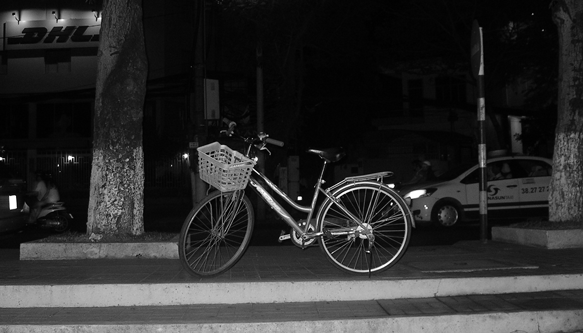
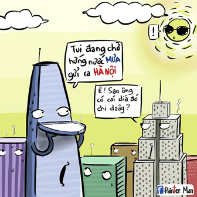
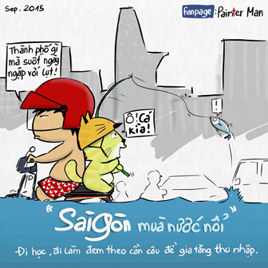
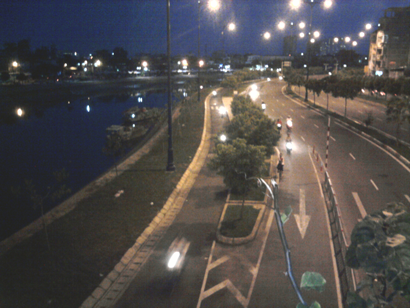
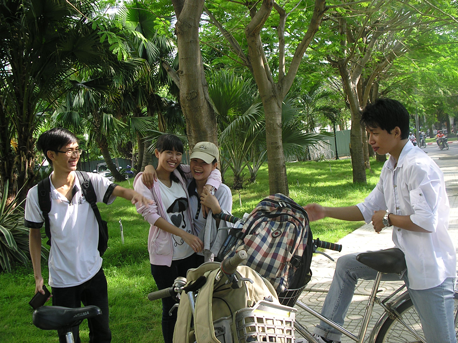
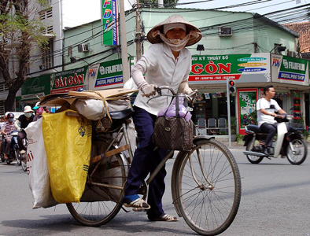

Nội dung
Số là hồi sáng, nhỏ bạn chia sẻ cuốn sách "Đời Về Cơ Bản Là Buồn Cười" của tác giả Lê Bích. Bữa nay tranh thủ sư phụ có việc đi về sớm nên tui cũng tranh thủ chuồn vô nhà sách.
Phân biệt đối xử
Câu chuyện cũng chả có gì cả, anh bảo vệ dễ thương kêu tui đá chống đi rồi dắt xe cho. Trong lúc đứng nhét thẻ xe vô bóp thì... Á đù, xe đạp thân yêu của tui nằm ở gốc cây, kế thùng rác bự màu xanh. Tui cũng thông cảm cho nhà sách vì nhiều người tới mà chỗ đậu xe lại có chút xíu. Nhưng mà làm như vậy, tui cảm giác mình bị phân biệt đối xử.
Sau vụ việc đó, tui lại nhớ tới hồi cấp 3 đạp xe đi mua sách. Số là thời đó, tui thích đi mua mấy cuốn sách của Nguyễn Hiến Lê, Vương Hồng Sển, Nguyễn Duy Cần. Có mấy lúc tui phải ra ngoài Fahasa Nguyễn Huệ tìm. Cái quái gì mà nhà sách lại éo có cái bãi giữ xe. Thấy bên hông có bãi thì mình chui vô... Chỉ giữ xe cho chung cư. Thế là phải đi vòng vòng hỏi, và đa số được một câu trả lời: "Ở đây không có giữ xe đạp". WTF??? Nhưng trời còn thương. Hồi đó, thương xá Tax vẫn còn. Chui vô đó gởi xe đạp. Tuy nó hơi giống hộp cá mòi nhưng cũng đỡ.
Nói vậy thôi, chứ ở tui đi xe đạp, chỉ thấy ở khu quận 1 là khó kiếm được chỗ gởi xe đạp thôi. Mấy quận khác thì tương đối dễ.
Saigon, hai mùa mưa - nắng
Trước hết thì ta nên bàn về cái nắng ở Saigon. Chắc mọi người đã nghe qua câu "Sài Gòn có 2 mùa: mùa nóng và mùa nóng thấy mẹ!". Cái mùa này đạp xe ở Saigon thì xác định. Nếu đi trên đường có nhiều cây xanh này nọ thỉ mát lắm luôn, như đường Nguyễn Thị Minh Khai (đoạn vòng xoay ngã 6 tới nhà văn hóa Thanh Niên), Ba tháng Hai, Nguyễn Chí Thanh, Ngô Gia Tự,... Còn đi mấy đường éo có bóng cây thì xác định như Thành Thái (đoạn Tô Hiến Thành tới MobiFone), Lý Thường Kiệt (đoạn Bảy Hiền về Ba tháng Hai),... Vấn đề là xe đạp đi hổng có được nhanh nên mấy đoạn nắng bỏ xừ là... xác định.
Chưa kể đến mấy lần kẹt xe nữa. Bạn mà đi đường Sư Vạn Hạnh (nối dài) gần bệnh viện 115 vào buổi trưa. Nóng nè, khói bụi nè, tiếng kèn xe nè, mùi cơ thể nè,... chưa kể bạn đang đói phải lo đi ăn nữa. Nói vậy chứ xe đạp thì dễ lách hơn xe máy nhiều. Hồi đó, thầy chủ nhiệm lớp 11 của tui đi dạy bằng xe đạp, nhà thầy gần nhà sư phụ tui. Thầy chia sẻ lợi ích của việc đi xe đạp là mỗi khi kẹt xe, thầy nhấc xe đạp lên lề dắt bộ ai cũng phải ngước nhìn @@. Học trò cũng ráng bắt chước thầy lắm, khổ nỗi là bây giờ, tay ga, xe số tụi nó leo lề nên hổng có được.
Saigon đôi khi cũng mít ướt bỏ xừ ra. Trời mưa thì nhiều lúc rơi hai ba hột rồi tạnh. Khi khác, Saigon "khóc" suốt mấy tiếng đồng hồ. Có mấy bữa đang đi ngon lành, trời mua kiếm chỗ trú. Vì em đến sau nên bị mấy bác xe máy xí hết chỗ rồi. Còn mấy bữa ông trời "khóc" mấy tiếng, có lần đi qua bên quận 8 đoạn đường số 8 và số 10. Nước nó ngập tới ngang hông, đạp xe như con rùa. Được cái là vừa đạp, vừa ngó mấy thím chạy Attila Victoria chết máy dắt bộ (thời này Nouvo, Air Blade, Lead,... chưa phổ biến).
Cái lần hoành tráng nhất là tháng 9 vừa rồi, bữa đó đi workshop về front-end ngoài quận 1. Mình chổng mông đạp rồi, gặp mấy ông nội taxi phóng nữa. Ướt nhẹp! Nói thiệt, đi xe đạp dưới mưa ở Saigon chỉ ghét mấy thằng cha taxi (đa số) và mấy "mẹ" chạy xe máy (đàn bà chạy xe nên tránh xa ra).
Dù Saigon mưa hay nắng, nó vẫn đáng yêu lắm. Trời nắng thì ta tranh thủ vô đường cây nhiều, đạp chậm lại hít thở không khí như đường Huyền Trân Công Chúa, Trương Định (đoạn công viên Tao Đàn tới bờ kênh), chạy dọc bờ kênh Nhiêu Lộc. Trời mưa thì... mặc áo mưa, đạp từ từ ngắm đường phố vắng người. Tại thường đường Saigon đông xe, trời mưa ít ra dữ dội luôn.
Những kỷ niệm trên chiếc xe cà tàng
Có một số thứ, bạn chỉ có thể làm được khi có chiếc xe đạp ở tại Saigon này thôi. Tấm hình ở trên, tui chụp với thằng bạn ở cầu đi bộ gần chợ Hòa Bình (quận 5). Hai thằng đạp ra đó, vác xe leo lên cầu (cũng cỡ 3 ~ 4m gì đó). Dắt lên, ngồi trên yên sau hóng gió, ngó làn xe chạy ở dưới (đại lộ Đông Tây/ đại lộ Võ Văn Kiệt). Cảm giác rất YoMost!!!
Hồi đó có đạp xe lên nghĩa trang Tp.HCM ở quận Thủ Đức. Bữa đó đạp cỡ 1 tiếng rưỡi, chở thêm "bao gạo" phía sau nữa, đi sự kiện gì đó của khoa. Có tụi bạn đi chung thì trời nóng, nắng, khói bụi xa lộ Hà Nội thì cũng vứt hết. Sau khi xong chương trình của khoa, rủ rê tụi nó đạp vô làng Đại Học rồi đạp về nội thành.
Nếu siêng, bạn thử đạp xe đi qua cầu Ánh Sao ở quận 7. Đi trên đại lộ Nguyễn Văn Linh, đi vòng vòng khu đô thị ven sông, ngắm biệt thự, hóng gió từ sông. Xong rồi đạp vòng vòng khu Phú Mỹ Hưng. Đi chậm chậm ngắm nhà người ta cho có động lực kiếm thiệt nhiều tiền. Không thì so sánh nhà ai đẹp hơn, nhà đó xây theo kiểu nào,...
Ở Saigon, có những thứ bạn phải đi thật chậm mới có thể cảm nhận được. Đi chậm để ngắm khách du lịch chơi rút gạch ở một khách sạn ở đường Phạm Ngũ Lão (quận 1), cảm nhận ổ gà (quận Tân Phú, lần cuối tui lên đó là một số đường đang làm lại), cảnh chờ đen đỏ trên dốc cầu Chánh Hưng (đèn đỏ đặt dưới chân cầu),... Và còn rất nhiều những trải nghiệm khác nữa.
Nhưng đáng nói nhất, đi xe đạp trong chợ. Tại nhà tui là trong chợ mà. Mỗi lần đi học, mấy "mẹ" đi lấn hết từ nửa đường tới nguyên bề ngang đường. Mình cũng muốn đạp cho lẹ, nhưng hổng lẽ tông vô người ta? Gặp mấy "mẹ" hay mấy "ba" đi xe máy nữa, bóp kèn nhức đầu. Nói chung, mỗi lần đi xe trong chợ đều hồi hộp vê lờ.
Chốt
Bài viết này tui xin phép lan man và viết theo kiểu này. Sẵn tiện, giới thiệu một phần nào đó du lịch ở Saigon bằng xe đạp luôn. Tui thích cái tên "Sài Gòn" hơn là tên của ai kia. nhưng tui thích gọi là "Saigon" vì thói quen nào giờ rồi. Có dịp, bạn và tui cùng hẹn nhau đi "phượt" Saigon nha!
